exactness of sheaves and exactness on stalks
1. Proposition
Let  be a grothendieck category,
be a grothendieck category,  a topological space and
a topological space and  be valued sheaves and
be valued sheaves and
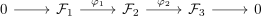
a sequence (see: zero sheaf)
TFAE:
- for arbitrary
 , the induced sequence by the stalk functor
, the induced sequence by the stalk functor
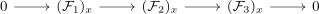
is exact
- the sequence
is exact
2. Proof
2.1. 1)  2)
2)
slightly sloppy: assuming concrete category:
2.1.1.
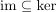
Assume
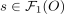
, then for each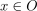
it follows, that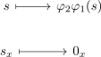
Taking is the only section making this diagram commute:
By assumption, for each there exists an open subset such that
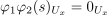
as both
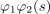
and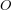
have the same stalk
applying glueing for gives 
2.1.2. b)
Let such that
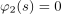
. Then for each stalk at it holds, that
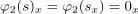
Thus there exists
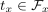
with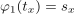
. Choose a representative , then there exists for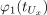
an open subset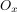
such that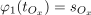